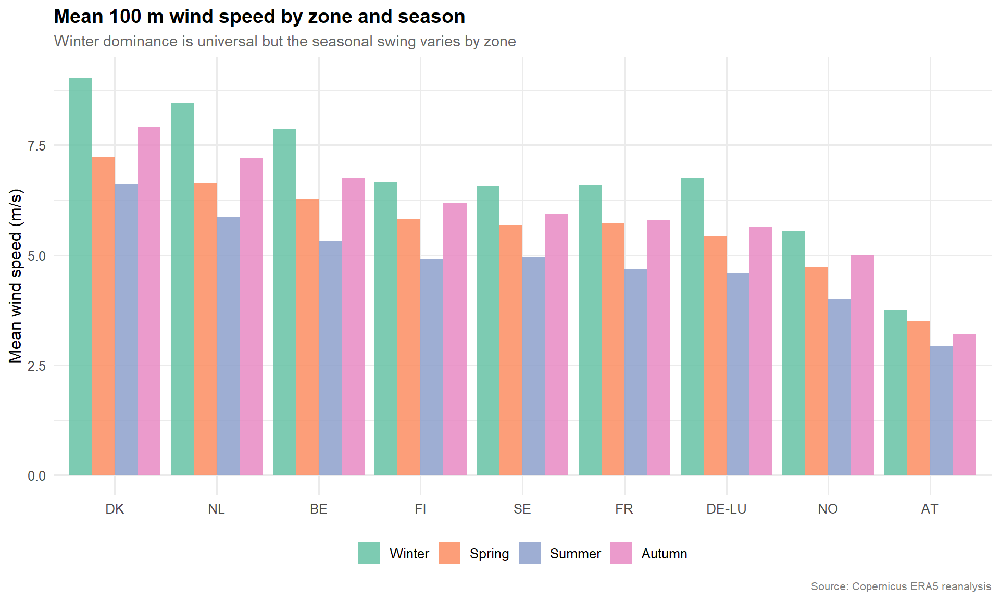
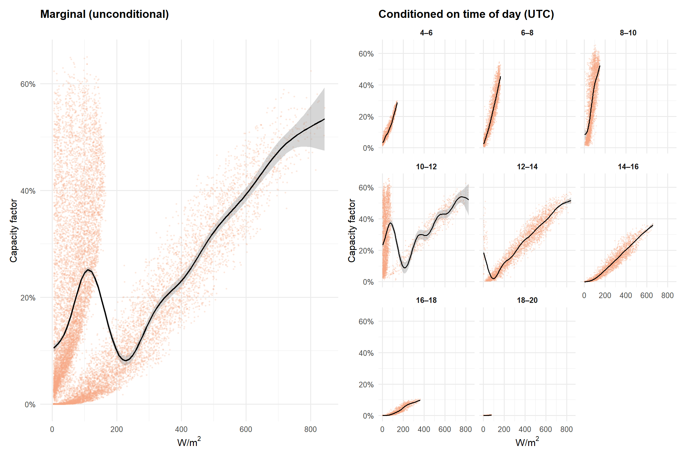
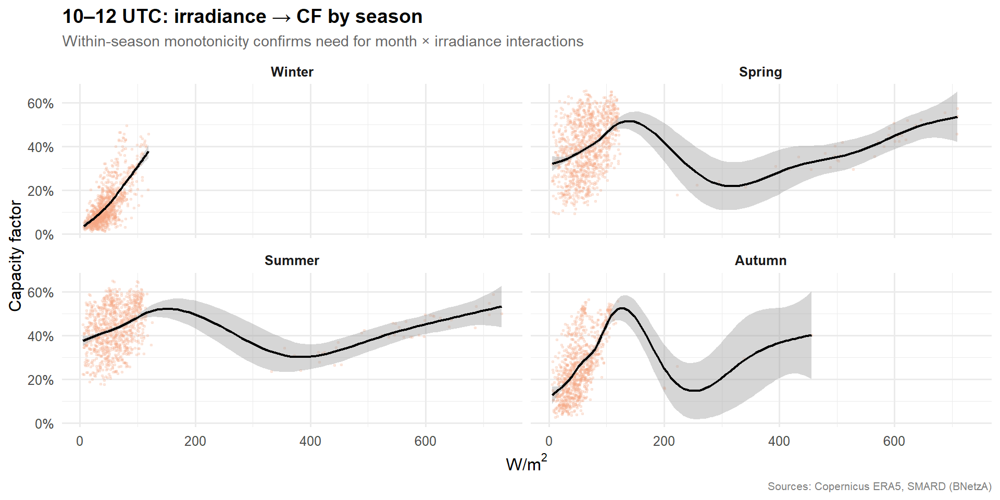

Cross-zone weather profiles and DE-LU capacity factor models
1.0 Overview
This page has two parts. First, we compare ERA5 reanalysis weather profiles across all available bidding zones — wind speed distributions, solar irradiance gradients, and seasonal patterns — to build intuition for why renewable generation (and its price impact) differs across Central Western Europe and the Nordics.
Second, we fit capacity-factor models for DE-LU, where SMARD provides the most granular generation breakdown by technology. These models link ERA5 weather variables to observed wind onshore, wind offshore, and solar PV output, and feed directly into the price decomposition (Stage 2) and risk simulation (Stage 3).
Modelling approach. For each technology we:
Join hourly ERA5 weather to observed SMARD generation and compute capacity factors using BNetzA installed-capacity milestones.
Fit a tidymodels workflow — polynomial weather terms plus month/hour fixed effects (with month × irradiance interactions for solar) — on a temporal 80/20 train/test split.
Evaluate with RMSE, MAE, and R² on the held-out test period.
2.0 Data loading
Show code
# ── Load all available ERA5 zone parquets ────────────────────────────era5_files <-list.files("data/processed/era5",pattern ="\\.parquet$",full.names =TRUE)era5_all <-map(era5_files, \(f) {read_parquet(f) |>mutate(zone =str_remove(basename(f), "\\.parquet$"))}) |>list_rbind()zones_available <-sort(unique(era5_all$zone))cat("ERA5 zones loaded:", paste(zones_available, collapse =", "), "\n")
ERA5 zones loaded: AT, BE, DE-LU, DK, FI, FR, NL, NO, SE
Heating degree days (HDD) and cooling degree days (CDD) translate raw temperature into demand-relevant signals. When temperatures drop below the base (18 °C), heating load rises roughly in proportion; when they exceed it, cooling demand kicks in. These are standard features in electricity load and price modelling across European markets.
We compute hourly HDD and CDD here and save them alongside the existing ERA5 variables so that Stage 2 (price decomposition) can ingest them directly.
Show code
hdd_cdd_base <-18# °C — standard European base temperatureera5_all <- era5_all |>mutate(hdd =pmax(hdd_cdd_base - temperature_2m, 0),cdd =pmax(temperature_2m - hdd_cdd_base, 0) )# Update DE-LU subsetera5 <- era5_all |>filter(zone == zone_file) |>select(-zone)# Summary checkera5 |>summarise(`HDD mean`=round(mean(hdd), 2),`HDD max`=round(max(hdd), 1),`CDD mean`=round(mean(cdd), 2),`CDD max`=round(max(cdd), 1),`Hours T < 18°C`=sum(temperature_2m < hdd_cdd_base),`Hours T > 18°C`=sum(temperature_2m > hdd_cdd_base) ) |> knitr::kable(caption ="HDD/CDD summary (DE-LU, 18 °C base)")
Figure 1: Seasonal distribution of hourly HDD and CDD (DE-LU). HDD dominates in winter; CDD is concentrated in summer but much smaller in magnitude — consistent with Germany’s heating-dominated climate.
3.0 Cross-zone weather profiles
Before narrowing to DE-LU for capacity-factor modelling, we compare the weather resource across all zones for which ERA5 spatial averages are available. These profiles explain much of the cross-zone variation in renewable generation — and ultimately in price dynamics — explored in Stage 2.
3.1 Wind speed distributions
Hub-height (100 m) wind speed distributions differ markedly across bidding zones, reflecting geographic exposure to Atlantic weather systems, coastal effects, and orography. Zones with higher mean wind speeds and heavier right tails support higher average capacity factors but also contribute more generation variability.
Show code
library(plotly)wind_density <- era5_all |>group_by(zone) |>group_map(\(df, grp) { d <-density(df$wind_speed_100m, from =0, n =256)tibble(zone = grp$zone, wind_speed = d$x, density = d$y) }) |>list_rbind()plot_ly(wind_density, x =~wind_speed, y =~density,color =~zone, type ="scatter", mode ="lines",fill ="tozeroy", opacity =0.35,hovertemplate =paste0("<b>%{meta}</b><br>","Wind speed: %{x:.1f} m/s<br>","Density: %{y:.4f}<extra></extra>" ),meta =~zone) |>layout(title =list(text ="100m wind speed distributions by bidding zone",font =list(size =14) ),xaxis =list(title ="Wind speed (m/s)"),yaxis =list(title ="Density"),legend =list(title =list(text ="Zone")),annotations =list(list(text ="Source: Copernicus ERA5 reanalysis",xref ="paper", yref ="paper", x =1, y =-0.12,showarrow =FALSE, font =list(size =8, color ="grey50"),xanchor ="right") ) )
3.2 Seasonal wind profiles
Wind resource shows strong seasonality across all zones — winter months are consistently windier — but the magnitude of the seasonal swing varies geographically. Zones with a large winter-to-summer ratio face more pronounced seasonal generation risk.
Show code
era5_all |>mutate(season =case_when(month(datetime_utc) %in%c(12, 1, 2) ~"Winter",month(datetime_utc) %in%c(3, 4, 5) ~"Spring",month(datetime_utc) %in%c(6, 7, 8) ~"Summer",TRUE~"Autumn" ),season =factor(season, levels =c("Winter", "Spring", "Summer", "Autumn")) ) |>group_by(zone, season) |>summarise(mean_wind =mean(wind_speed_100m, na.rm =TRUE),.groups ="drop" ) |>mutate(zone =fct_reorder(zone, mean_wind, .fun = mean, .desc =TRUE)) |>ggplot(aes(x = zone, y = mean_wind, fill = season)) +geom_col(position ="dodge", alpha =0.85) +scale_fill_brewer(palette ="Set2") +labs(title ="Mean 100 m wind speed by zone and season",subtitle ="Winter dominance is universal but the seasonal swing varies by zone",x =NULL,y ="Mean wind speed (m/s)",fill =NULL,caption ="Source: Copernicus ERA5 reanalysis" )

Figure 2
3.3 Solar irradiance gradient
Surface solar irradiance falls with latitude — southern zones receive materially more annual radiation than Nordic zones. This gradient drives differences in solar PV economics and in the relative contribution of solar variability to price risk across the interconnected market.
era5_all |>group_by(zone) |>summarise(`Wind 100m mean (m/s)`=round(mean(wind_speed_100m, na.rm =TRUE), 2),`Wind 100m sd (m/s)`=round(sd(wind_speed_100m, na.rm =TRUE), 2),`Solar mean (W/m²)`=round(mean(ssrd_wm2, na.rm =TRUE), 1),`Solar daylight mean (W/m²)`=round(mean(ssrd_wm2[ssrd_wm2 >0], na.rm =TRUE), 1 ),`Temp mean (°C)`=round(mean(temperature_2m, na.rm =TRUE), 1),`Hours`=n(),.groups ="drop" ) |> knitr::kable(caption ="ERA5 weather summary statistics by bidding zone")
Table 1: ERA5 weather summary statistics by bidding zone
zone
Wind 100m mean (m/s)
Wind 100m sd (m/s)
Solar mean (W/m²)
Solar daylight mean (W/m²)
Temp mean (°C)
Hours
AT
3.35
1.31
84.4
149.4
8.0
52608
BE
6.54
2.93
76.3
138.5
11.2
52608
DE-LU
5.60
2.17
75.9
132.2
10.4
52608
DK
7.69
3.16
71.1
126.0
9.7
52608
FI
5.89
1.91
57.1
91.7
3.8
52608
FR
5.69
2.14
86.0
147.9
12.1
52608
NL
7.03
3.10
74.4
134.1
11.4
52608
NO
4.81
1.53
56.4
87.7
3.3
52608
SE
5.78
1.79
60.6
96.6
4.6
52608
The remainder of this page focuses on DE-LU, where SMARD provides hourly generation by technology (wind onshore, wind offshore, solar PV) and BNetzA publishes installed-capacity milestones — the data needed to compute capacity factors and fit weather → generation models.
4.0 DE-LU weather profiles
4.1 Distributions
Show code
p_wind100 <-ggplot(era5, aes(x = wind_speed_100m)) +geom_histogram(bins =80, fill = pal["wind_onshore"], alpha =1.7) +labs(title ="100 m wind speed", x ="m/s", y ="Count")p_wind10 <-ggplot(era5, aes(x = wind_speed_10m)) +geom_histogram(bins =80, fill = pal["wind_offshore"], alpha =1.7) +labs(title ="10 m wind speed", x ="m/s", y ="Count")p_temp <-ggplot(era5, aes(x = temperature_2m)) +geom_histogram(bins =80, fill ="grey50", alpha =1.7) +labs(title ="2 m temperature", x ="°C", y ="Count")p_ssrd <- era5 |>filter(ssrd_wm2 >0) |>ggplot(aes(x = ssrd_wm2)) +geom_histogram(bins =80, fill = pal["solar"], alpha =1.7) +labs(title ="Surface solar radiation (daylight only)",x =expression("W/m"^2), y ="Count")(p_wind100 + p_wind10) / (p_temp + p_ssrd) +plot_annotation(title =glue("ERA5 weather variable distributions — {zone_file}"),caption ="Source: Copernicus ERA5 reanalysis" )
ERA5 ssrd is originally an accumulated field (J/m² per forecast step). Before modelling we verify that the converted instantaneous values align temporally with SMARD solar generation — a 1-hour offset would produce misleading scatter plots and biased models.
Show code
era5 |>inner_join(smard, by ="datetime_utc") |>filter(month(datetime_utc) ==6) |>mutate(hour_utc =hour(datetime_utc)) |>filter(hour_utc %in%4:20) |>group_by(hour_utc) |>summarise(mean_ssrd =mean(ssrd_wm2, na.rm =TRUE),mean_solar =mean(solar, na.rm =TRUE),.groups ="drop" ) |>pivot_longer(-hour_utc, names_to ="source", values_to ="value") |>mutate(source =recode(source,mean_ssrd ="ERA5 solar radiation",mean_solar ="SMARD solar generation")) |>ggplot(aes(x = hour_utc, y = value, colour = source)) +geom_line(linewidth =1) +geom_point(size =2) +facet_wrap(~ source, scales ="free_y") +labs(title ="Timestamp alignment: ERA5 vs SMARD (June)",subtitle ="Peaks at the same UTC hour confirm correct alignment",x ="Hour (UTC)",y =NULL,colour =NULL,caption ="Sources: Copernicus ERA5, SMARD (BNetzA)" ) +theme(legend.position ="none")
Computing capacity factors requires dividing observed generation (MW) by installed capacity (MW). SMARD does not include an installed-capacity column, so we construct a lookup from BNetzA / Marktstammdatenregister year-end published totals and interpolate linearly to daily resolution.
model_data <- model_raw |>left_join(cap_daily, by ="date") |>mutate(cf_wind_onshore = wind_onshore / cap_wind_onshore,cf_wind_offshore = wind_offshore / cap_wind_offshore,cf_solar = solar / cap_solar ) |># Solar CF is only meaningful during daylight; set nighttime to NAmutate(cf_solar =if_else(ssrd_wm2 >0| solar >0, cf_solar,NA_real_))cat("Observations with valid CF:",sum(!is.na(model_data$cf_wind_onshore)), "(wind on),",sum(!is.na(model_data$cf_wind_offshore)), "(wind off),",sum(!is.na(model_data$cf_solar)), "(solar)\n")
The marginal relationship between irradiance and solar CF appears non-monotonic when plotted unconditionally. This is not a modelling problem — it reflects the mixing of seasonal regimes. At the same irradiance level (e.g. 100 W/m²), winter midday produces a high CF (that is as good as the sun gets in January) while summer cloud cover at the same irradiance implies suppressed output relative to clear-sky potential. The hour and month fixed effects in the model capture this conditioning; the faceted plots below confirm monotonic relationships within time-of-day strata.
Show code
solar_plot_df <- model_data |>filter(!is.na(cf_solar), ssrd_wm2 >5)p_marginal <- solar_plot_df |>slice_sample(n =15000) |>ggplot(aes(x = ssrd_wm2, y = cf_solar)) +geom_point(alpha =0.15, colour = pal["solar"], size =0.5) +geom_smooth(method ="gam", formula = y ~s(x),colour ="black", linewidth =0.8, se =TRUE) +scale_y_continuous(labels = scales::percent_format()) +labs(title ="Marginal (unconditional)",x =expression("W/m"^2),y ="Capacity factor" )p_faceted <- solar_plot_df |>mutate(hour_bin =cut(hour(datetime_utc),breaks =seq(4, 22, by =2),labels =paste0(seq(4, 20, by =2), "–",seq(6, 22, by =2)),include.lowest =TRUE)) |>filter(!is.na(hour_bin)) |>slice_sample(n =20000) |>ggplot(aes(x = ssrd_wm2, y = cf_solar)) +geom_point(alpha =0.16, colour = pal["solar"], size =0.3) +geom_smooth(method ="gam", formula = y ~s(x),colour ="black", linewidth =0.7) +facet_wrap(~ hour_bin, ncol =3) +scale_y_continuous(labels = scales::percent_format()) +labs(title ="Conditioned on time of day (UTC)",x =expression("W/m"^2),y ="Capacity factor" )p_marginal | p_faceted +plot_annotation(title ="Solar irradiance → PV capacity factor",caption ="Sources: Copernicus ERA5, SMARD (BNetzA)" )

Figure 8
7.3 Midday deep dive: season resolves the remaining non-monotonicity
Even within the 10–12 UTC bin, the relationship appears non-monotonic. Faceting by season confirms this is a solar geometry effect: the same irradiance value implies very different things in winter versus summer.
Show code
model_data |>filter(!is.na(cf_solar), ssrd_wm2 >5,hour(datetime_utc) %in%10:11) |>ggplot(aes(x = ssrd_wm2, y = cf_solar)) +geom_point(alpha =0.18, colour = pal["solar"], size =0.5) +geom_smooth(method ="gam", formula = y ~s(x),colour ="black", linewidth =0.8) +facet_wrap(~ season) +scale_y_continuous(labels = scales::percent_format()) +labs(title ="10–12 UTC: irradiance → CF by season",subtitle ="Within-season monotonicity confirms need for month × irradiance interactions",x =expression("W/m"^2),y ="Capacity factor",caption ="Sources: Copernicus ERA5, SMARD (BNetzA)" )

Figure 9
8.0 Capacity factor models
We fit one tidymodels workflow per technology using a temporal 80/20 train/test split (no shuffling — critical for time-series validity). Wind models use polynomial wind-speed terms with month/hour fixed effects. The solar model includes month × irradiance interaction terms to capture the seasonal variation in the irradiance–CF slope identified in the EDA above.
The offshore wind model achieves an R² of only ~0.29 on the test set — substantially weaker than onshore wind (R² ~0.92) or solar PV (R² ~0.84). This is a spatial resolution problem, not a specification issue: ERA5 wind speeds are averaged over the entire DE-LU zone using cosine-latitude weighting, which dilutes the coastal and maritime wind signals that drive offshore turbine output. Offshore farms in the German North Sea and Baltic experience wind regimes that differ meaningfully from the zone-average conditions captured by the ERA5 spatial mean.
Downstream implications. This model is used in Stage 3 to predict offshore capacity factors for the Monte Carlo revenue simulation. At R² = 0.29, the predictions are essentially noisy — they will understate the true range of offshore generation outcomes. We flag this as a known limitation of the current data pipeline. A targeted improvement would be to extract ERA5 grid cells overlapping German offshore wind farm clusters (e.g. the Helgoland/Borkum cluster in the North Sea) rather than using the full DE-LU spatial average. For this iteration, the Stage 3 portfolio analysis focuses on onshore wind where the CF model is reliable.
8.3 Solar PV
The solar recipe includes month × irradiance interactions so that the irradiance–CF slope can vary by month — physically motivated by the seasonal change in solar geometry (sun angle, day length) identified in Section 8.3. Temperature is included to capture the ~0.4%/°C efficiency loss above standard test conditions (25 °C).
Two diagnostic panels per technology: predicted versus actual capacity factor (a well-calibrated model hugs the 1:1 line) and the residual distribution (centred near zero with no heavy skew indicates the model specification is adequate).
The scatter and histogram diagnostics above assess bias and distributional shape, but not temporal dependence. If model residuals are strongly autocorrelated, it indicates systematic patterns the specification is missing — for instance, multi-day weather persistence or seasonal ramp events that the polynomial + fixed effects structure cannot capture.
We plot the ACF and PACF for the wind onshore and solar PV test-set residuals (offshore is omitted given its low R²). Significant autocorrelation at short lags (1–6 hours) is expected — weather persistence is physical — but decay beyond ~24 hours would suggest the model is adequate for the hourly predictions used in Stage 3.
Figure 11: Residual ACF and PACF for the wind onshore and solar PV capacity factor models (test set). Significant short-lag autocorrelation reflects physical weather persistence; rapid decay beyond 24–48 hours indicates the model captures the dominant temporal structure.
NoteInterpreting the ACF/PACF
Significant autocorrelation at lags 1–6 is expected and not concerning for this application: weather systems persist for hours, so a model that conditions on instantaneous weather will inevitably leave correlated residuals. What matters for downstream use is whether the residuals exhibit systematic multi-day structure. If the ACF decays to near zero by lag 48, the model is capturing the dominant temporal features and the remaining autocorrelation reflects irreducible weather persistence. If the PACF shows spikes at 24-hour intervals, a diurnal component may be under-specified — but this is unlikely given the hour fixed effects already in the recipe.
10.0 Save fitted workflows
The fitted tidymodels workflow objects are serialised to models/ for reuse in Stage 2 (price decomposition) and Stage 3 (risk simulation). Each .rds file contains the full preprocessing recipe plus fitted coefficients — predict(readRDS(...), new_data) is all downstream stages need.
bind_rows( metrics_wind_on |>mutate(technology ="Wind onshore"), metrics_wind_off |>mutate(technology ="Wind offshore"), metrics_solar |>mutate(technology ="Solar PV")) |>select(technology, .metric, .estimate) |>pivot_wider(names_from = .metric, values_from = .estimate) |> knitr::kable(digits =4,caption =glue("Summary of capacity factor model performance on the temporal test set ({zone_file})") )
Summary of capacity factor model performance on the temporal test set (DE-LU)
technology
rmse
rsq
mae
Wind onshore
0.0416
0.9167
0.0307
Wind offshore
0.1852
0.2855
0.1507
Solar PV
0.0663
0.8407
0.0515
Cross-zone context. The ERA5 weather profiles in Section 4 reveal substantial geographic variation in renewable resource quality. Wind speeds are highest in coastal and Nordic zones, while solar irradiance follows a clear latitude gradient. These physical differences drive the cross-zone variation in renewable generation patterns — and ultimately in the price dynamics — explored in Stage 2.
Derived weather features. HDD and CDD (Section 3) translate ERA5 temperature into demand-relevant signals for Stage 2. Germany’s climate is heating-dominated: HDD values are substantially larger and more variable than CDD, consistent with winter load being the primary temperature-driven demand component in the DE-LU zone.
DE-LU capacity factor models. ERA5 100 m wind speed is the dominant predictor of wind generation capacity factors, with the cubic polynomial capturing the characteristic ramp-up and saturation of a turbine power curve. Solar irradiance maps onto PV capacity factors with a slope that varies by month — an interaction effect driven by solar geometry (sun angle and day length). The month × irradiance terms resolve the apparent non-monotonicity visible in the unconditional scatter plot (Section 8.2), confirming that the bimodal pattern reflects seasonal regime mixing rather than a data quality issue. Temperature adds a modest correction for PV cell-efficiency losses above standard test conditions (25 °C).
Offshore wind limitation. The offshore CF model (R² ~0.29) is substantially weaker than onshore or solar, due to the spatial averaging of ERA5 over the full DE-LU zone diluting coastal wind signals. This is a known limitation flagged in Section 9.2; the Stage 3 portfolio analysis focuses on onshore wind where the CF model is reliable.
Residual autocorrelation. The ACF/PACF analysis (Section 11) confirms that short-lag autocorrelation in CF model residuals reflects physical weather persistence rather than model misspecification. Rapid decay beyond 24–48 hours indicates the polynomial + fixed effects specification captures the dominant temporal structure.
These fitted workflows feed directly into Stage 2, where weather-driven generation predictions are used as features in the day-ahead price decomposition model.